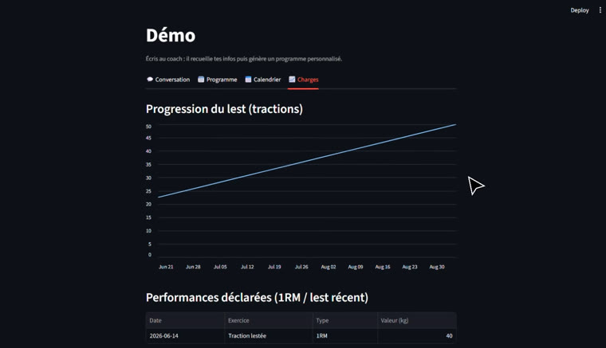
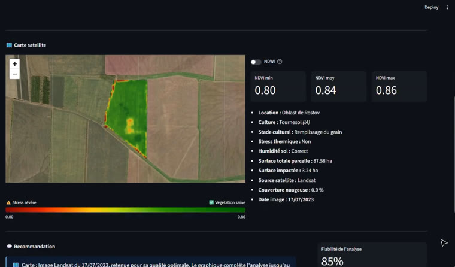
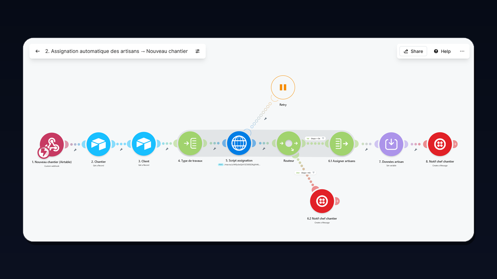

Coach IA de Streetlifting
Outils n8n · Telegram · Streamlit · Multi-agents
Après de nombreuses années en agriculture de précision, j'ai appris à comprendre, anticiper les besoins clients, et à trouver les solutions pour y répondre. Je conçois aujourd'hui des outils IA dans le même esprit : automatisations et systèmes multi-agents au service de résultats réels.
Chaque fiche projet explique le besoin de départ, ce que j'ai construit, et montre le fonctionnement avec une démo.

Outils n8n · Telegram · Streamlit · Multi-agents

Outils Python · Streamlit · Google Earth Engine

Outils Airtable · Make · No-code
Airtable · Make · n8n
LLM · Agents · Python
Données satellites · Météo · Capteurs
Email geoffreysarran@gmail.com
LinkedIn linkedin.com/in/geoffrey-sarran